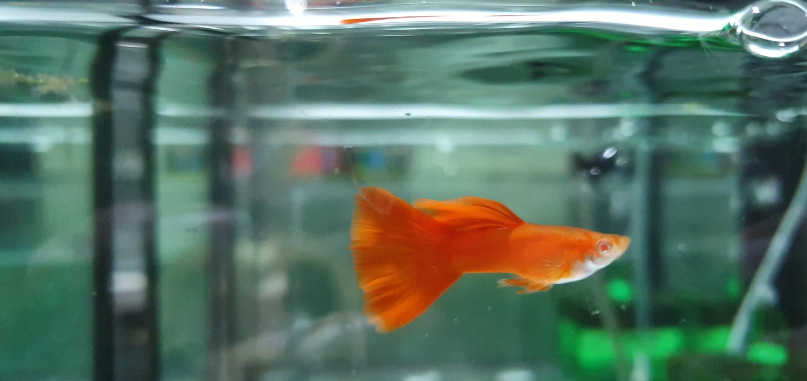
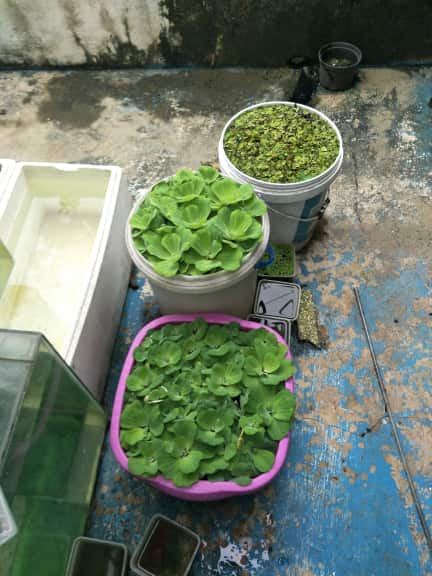
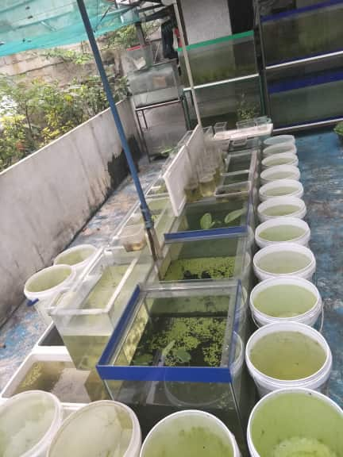
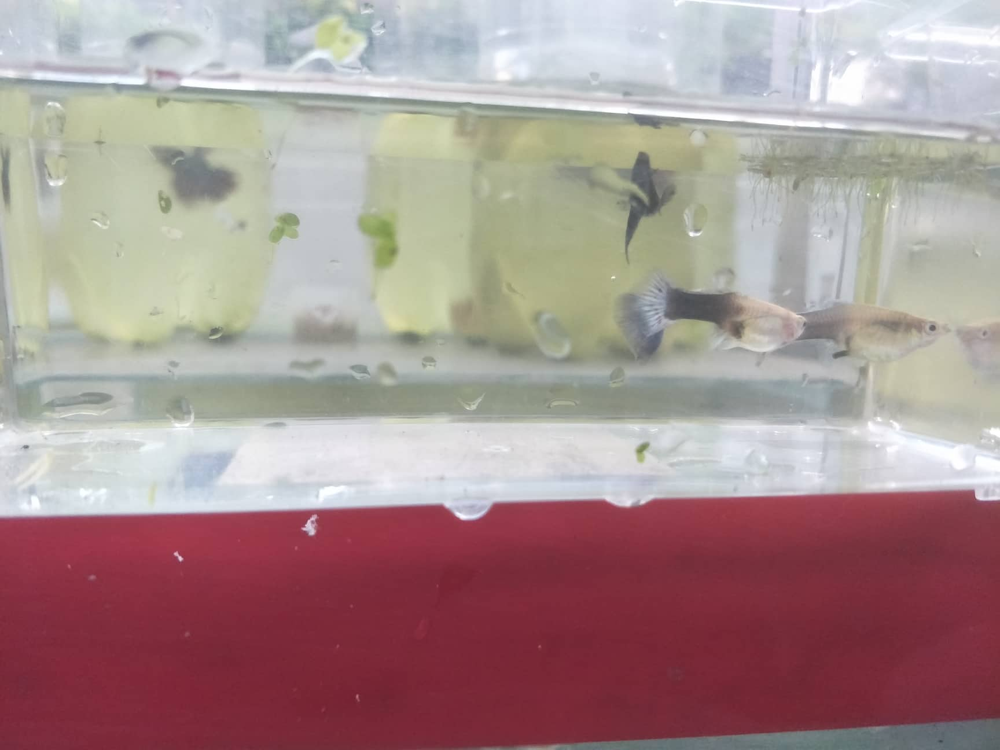
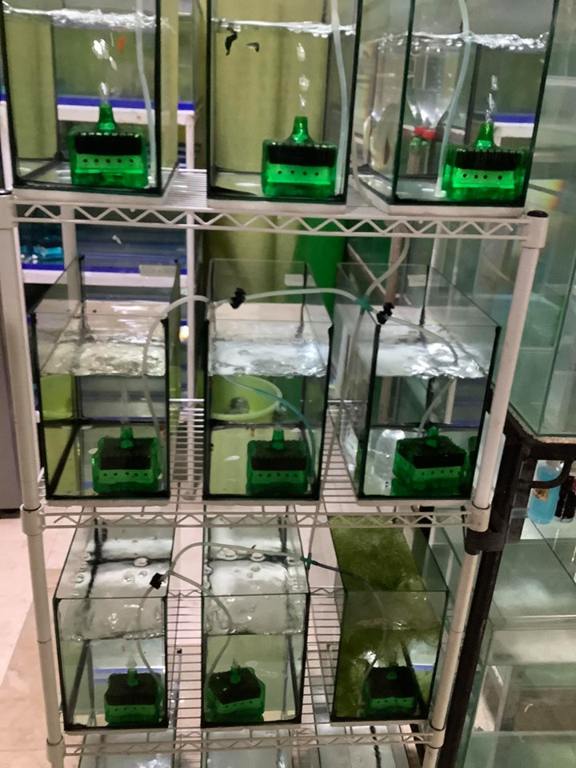
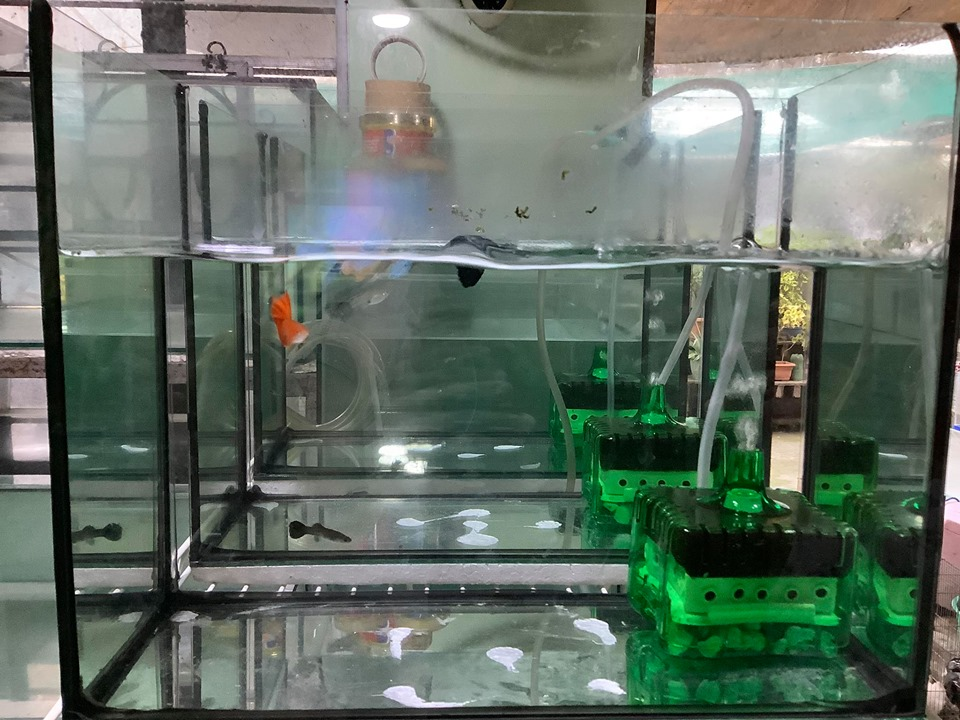
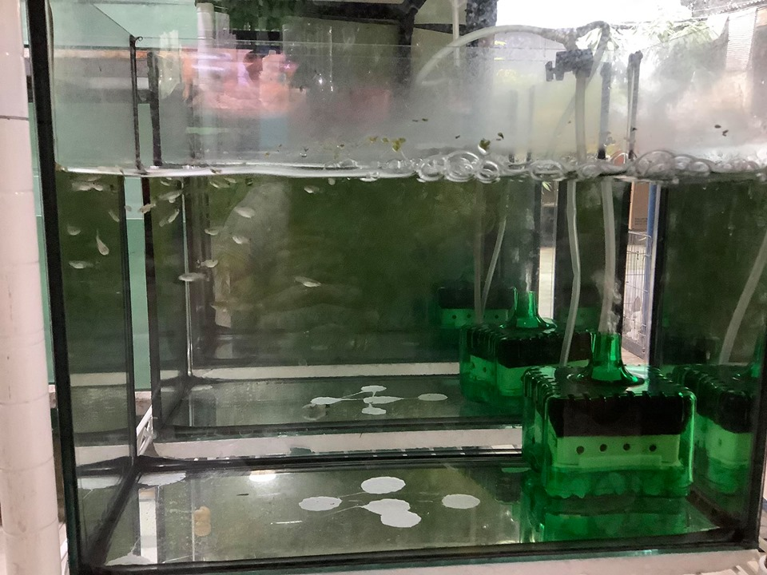
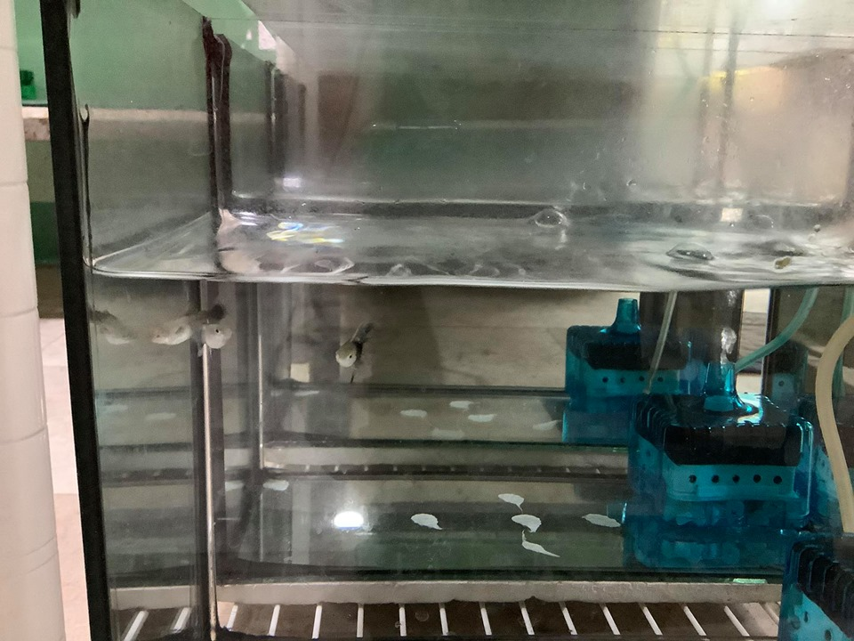

FATE'S PETSHOP
Guppy Fishes
Guppy Breeder
FEATURED IMAGES
 |
 |
 |
FOR BUSSINESS INQUIRIES
E-mail:mj135ralph@gmail.com
Facebook: Ralph Manuel Torres
Contact Number: 09481205058
AVAILABLE FISHES
Guppy strains
Albino full red
Albino blue topaz
Albino platinum white Electric blue moscow
Blue grass
Blue lace
Purple lace
Metal black lace
Dumbo ear mosaic
Dragon snake skin
Yellow tiger mosaic
Half black blue
Halfblack yellow
Half black white
Yellow king cobra
Red dragon mosaic
Yellow micariff
GUPPY FOOD
Live food
Grindal worms
Blood worms
Daphnia
Granule or powder food Watchupong granules
Apk from japan
Powdermix
FOR MORE PHOTOS PLEASE VISIT MY FACEBOOK ACCOUNT
https://www.facebook.com/ralphmanuel.bautista
ABOUT GUPPY FISHES
The guppy (Poecilia reticulata), also known as millionfish and rainbow fish, is one of the world's most widely distributed tropical fish and one of the most popular freshwater aquarium fish species. It is a member of the family Poeciliidae and, like almost all American members of the family, is live-bearing.
How many fish do guppies have?
One of the first questions people usually ask is, "How do guppies have babies?" When a guppy gives birth, the females will "drop" 2 to 200 baby guppies, called fry, typically in four to six hours. If she is stressed, however, the process to give birth to all the fry can take up to 12 hours.
How long do guppy fish live for?
Guppies can live as long as four or five years if they're looked after properly. However, it's more common for them to live between just one and two years.
They will grow to full size in about six months, which is 1.5 inches long for males, and 2.5 inches for females, not counting the tail.
MORE PICTURES
 |
 |
 |
 |